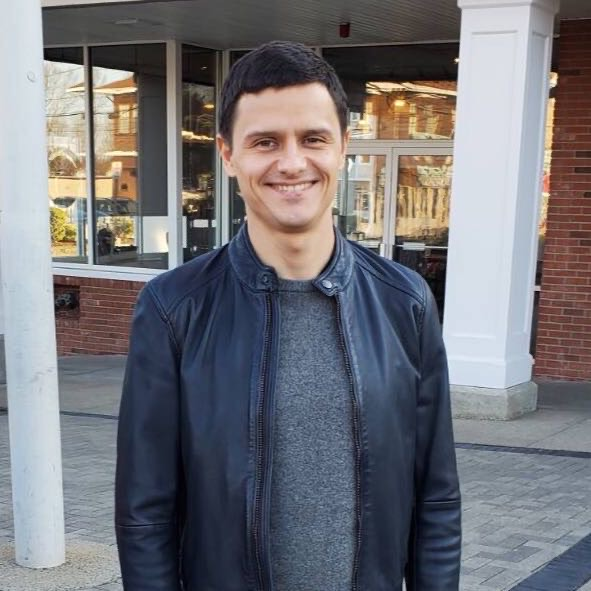
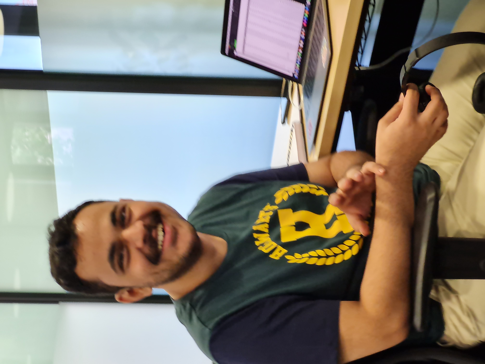
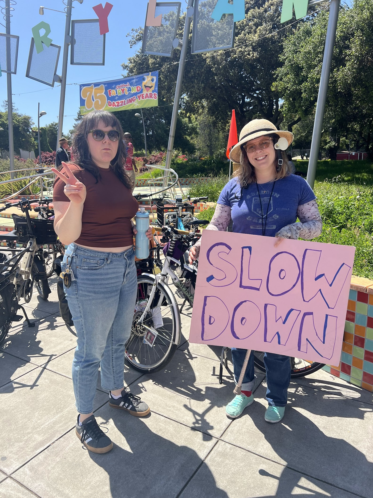
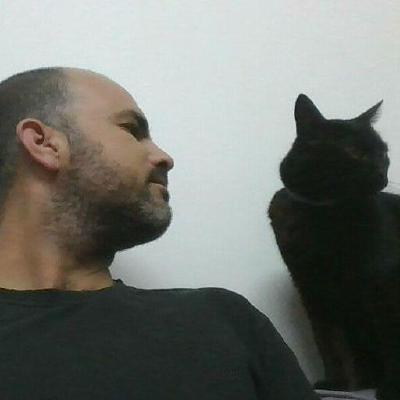
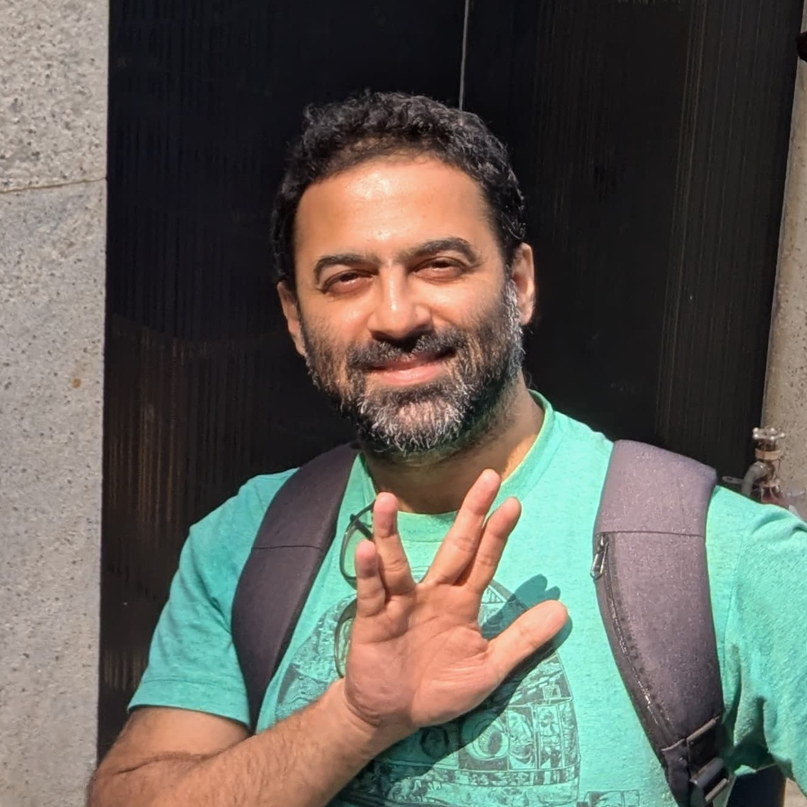

Sessions
Data analysis stories
1D Viscous Fluid Flow Data Analysis Using Burgers’ Equation
In this talk, I will share my early exploration into simulating and analyzing viscous fluid flow using the 1D Burgers’ equation as the beginning of my journey in computational fluid dynamics (CFD). I will walk through how I implemented the Burgers’ equation solver in 1-D in Clojure, referenced from the 12-step CFDPython series (https://github.com/barbagroup/CFDPython). Using data generated from my simulation, I will demonstrate how shock structures are smoothed by viscosity and how nonlinear interactions evolve over time. Along the way, I will reflect on the process of learning the essence of the Burgers’ equation, then implementing it in a functional programming paradigm, and close with a glimpse of future directions, including extending these ideas toward multidimensional simulations and more complex flow behavior.

Brain Data in Clojure
This is an introductory talk to the field of Brain-Computer Interfacing, and how Clojure can power intuitive, composable data workflows for real-world brain data. Drawing from my journey through BCI research, I’ll demonstrate how Clojure’s unique strengths simplify signal processing, data visualization, and working with APIs such as the OpenBCI ‘BrainFlow’ API.
The session also invites a broader conversation about the ethical implications of brain-computer interfaces, and how developers can meaningfully contribute to this rapidly evolving field. This talk is for anyone curious about brain data, functional programming, or building new tools at the edge of human-computer interaction.
UK Electricity Demand Time Series Forecasting
Time series forecasting is a critical task across many fields, from finance to weather prediction. This talk provides a high-level overview of how to approach time series forecasting using Clojure and its growing ecosystem of data science tools. I will walk through the key steps involved in building a forecasting model, using the ‘taylor’ dataset containing electricity demand data from the UK as a practical example, without delving into the code details.
The session will cover:
- Understanding the Data
- Feature Engineering
- Machine Learning Modeling
- Model Selection and Evaluation

Tropical cyclone trajectory modelling
Tropical Cyclone’s happen every year and claim hundreds of lives and billions in damages. Accurate cyclone track forecasting is crucial for disaster preparedness and mitigation. Timely predictions help authorities issue early warnings, evacuate affected areas, and minimize economic and human losses. This project focuses on forecasting cyclone tracks using historical data from the India Meteorological Department (IMD) and Wind Velocity Vectors calculated using EUMETSAT’s METEOSAT-7 data.

Customer churn analysis
Automatic customer churn data analysis by combination of LLM, logic programming & Noj

The Impact of Lane Reductions: A Data-Driven Look at Oakland Streets
The City of Oakland has done work to implement traffic calming measures on many of their streets. Do these reduce crashes and injuries? This talk with analyze the impact of lane reductions and addition of bike lanes and bus loading islands by examining crash data before and after the redesign in of Telegraph Ave in 2021. Then, I’ll look at Grand Avenue, which has not received any traffic calming measures, to explore who is currently most affect by traffic violence and who could benefit from similar interventions.

Studying planning with a novel video game
Tik Tik is a novel video game that we developed to study individual and collaborative planning. Here we use this video game to study individual planning. We developed multiple levels for this task and tested these levels in a series of studies. These studies allowed us to identify a set of levels that lie within the capabilities of the general population. Moreover, they allowed us to determine level parameters that determine level difficulty.
Parliamentary Questions and Answers: Using noj to explore basic RAG techniques
As part of the Irish democratic process, members of parliament can submit questions to government departments and the answers are routinely published online. For this session, I will look at how this data could potentially be used to build a RAG model that can compile answers to typical questions asked of the government. I will also look at some basic ways we can try to test these approaches.
Background knowledge
An intro to probability and statistics
This session will offer a brief intro to probability theory concepts and then use them to explain common statistical methods. It will repeat some content from our May 10th workshop so we can discuss it further at the conference.

Linear Foundations and Nonlinear Frontiers: A Journey Through Mathematical Methods
Our session isn’t just about listing techniques, it’s about the journey. We’ll explore how we move from the simplicity of linear models towards tackling the complex challenges real-world data throws at us. It’s about understanding our starting point and then, step by step, embracing the evolution that leads to breakthrough solutions.
RAGgedy Ann’s Big Adventure
An introductory session for LLMs, Embeddings, and RAG systems.
Discussion: RAGs and structured knowledge
This was an additional discussion by a few of the SciNoj Light #1 speakers and participants, following a few of the talks of the first day. We began with RAGs and then continued to discuss the semantic web, ontologies, etc.
An intro to the Noj toolkit
This session will offer a brief overview of the Noj toolkit. It will repeat some content from our May 10th workshop and mostly offer an opportunity to ask questions.
Noj deep dive
This session is intended to provide the audience with a technical background for the more concrete data analysis sessions in the conference. We will introduce a few of the libraries behind the Noj toolkit and practice using them to process, analyse, and visualize real-world data.
Special
Hello day 1
Settling in, introducing the conference and the team of hosts

macroexpand-1
This will be the first meeting in the new series of macroexpand gatherings. It will focus on initiating new projects of research/teaching/implementation/documentation/study group, that we will be running towards the next SciNoj conference later this year.
The session will begin by a few brief experience reports and proposals by participants. Then we will expand the discussion till we converge to actionable steps we will follow up on.
Building a Data Science Ecosystem in Clojure: Lessons from the Tidyverse
The Tidyverse transformed data science in R — not just by providing better tools, but by uniting them under a shared philosophy. Clojure, with its immutable data structures, functional paradigm, REPL-driven development, and a community that values simplicity and composability, is uniquely positioned to take these ideas even further. What we’re building isn’t just a set of libraries, it’s a new way of thinking about data.
This talk is about how we get there, together. We’ll explore the principles that have guided the evolution of Scicloj, the challenges we’ve encountered, and the opportunities ahead. From our grassroots beginnings to a future of powerful, unified tools, this is a call to help shape the next chapter, and to imagine what data science and data engineering can become when they’re built the Clojure way.
source: notebooks/sessions.clj